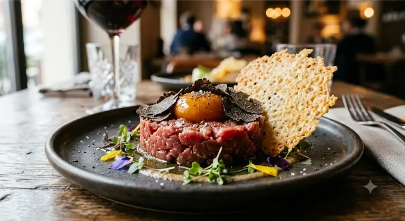
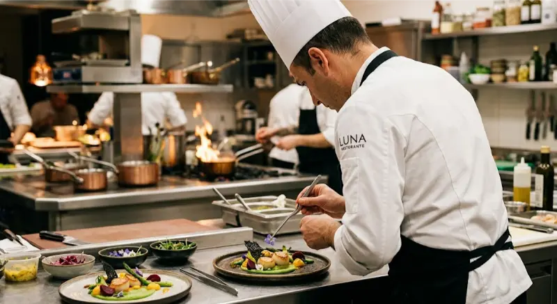

Tartare di Fassona
€ 24Battuta al coltello, tuorlo d'uovo di selva marinato, perlage di tartufo nero estivo e cialda croccante al Parmigiano Reggiano 36 mesi.
Un viaggio sensoriale tra la memoria culinaria italiana e l'avanguardia tecnica. Scopri la purezza della materia prima nel cuore di Roma.
Selezioniamo ingredienti rari dai micro-produttori del territorio laziale e italiano per sublimarli in composizioni culinarie senza compromessi.
A Lumina ogni portata è concepita come un dialogo tra contrasti: temperature, consistenze e aromi studiati per orchestrare una profonda risonanza emotiva.

Piazza del Colosseo, 1, 00184 Roma (RM)
Mar - Sab: 19:30 - 23:30 (Cena)
Domenica: 12:30 - 15:00 • 19:30 - 23:00
Lunedì: Giorno di Chiusura